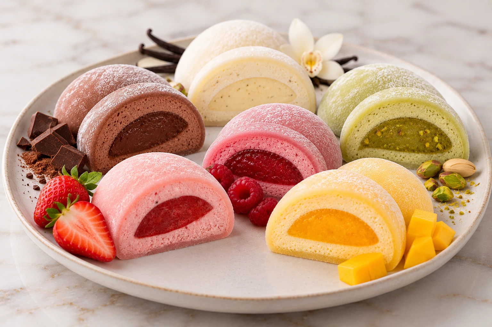

ИДИЛЛИЯ ВКУСА · МОТИ РУЧНОЙ РАБОТЫ
Маленький десерт.
Большое удовольствие.
Нежное рисовое тесто, воздушный крем и яркая начинка. Шесть вкусов, чтобы найти свой любимый.

6 ВКУСОВ — 6 ПОВОДОВ ВЛЮБИТЬСЯ
Наши моти
Каждый вкус — это гармония нежного
рисового теста и насыщенной начинки.
Предварительное меню. Состав, наличие и цены уточняются перед заказом. Десерты могут содержать молоко и орехи.
Натуральные ингредиентыБережно выбираем каждый продукт
Ручная работаКаждый моти сделан с любовью
Яркие сочетанияКлассические и любимые вкусы
Красиво даритьМаленький повод для большой радости
О МОТИ
Японская традиция
в современном исполнении
Моти — традиционный японский десерт из нежного рисового теста с разнообразными начинками. В «Идиллии Вкуса» мы соединяем эту традицию с любовью к простым удовольствиям.
Тонкая оболочка, нежная начинка и момент, который хочется растянуть. Выберите свой вкус и поделитесь радостью с близкими.
Найти любимый вкус →к каждому моти ♡
ВАШИ ВПЕЧАТЛЕНИЯ
Счастье, которым хочется делиться
Здесь появятся ваши отзывы.
Попробуйте наши моти и расскажите, какой вкус стал любимым.
ДОСТАВКА
Навстречу сладким моментам
Время приготовления согласуем при подтверждении заказа.
Город, адрес и стоимость доставки уточняются.
Соберите любимые вкусы или выберите готовое ассорти.